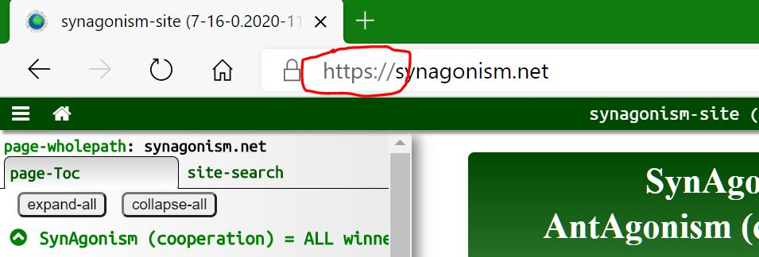
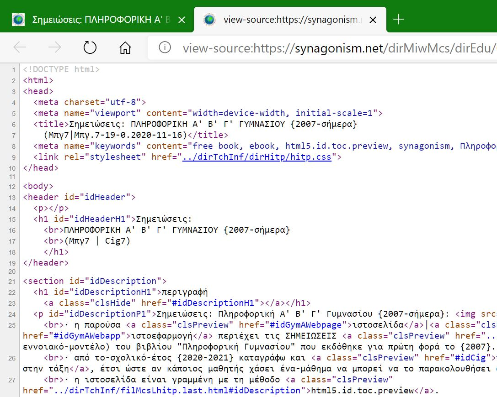
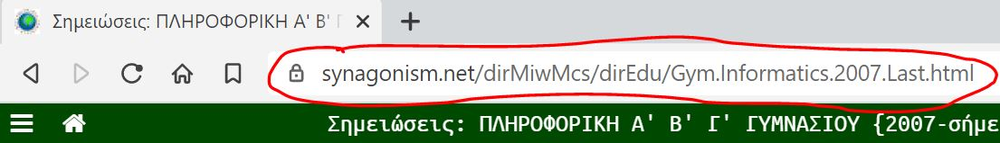
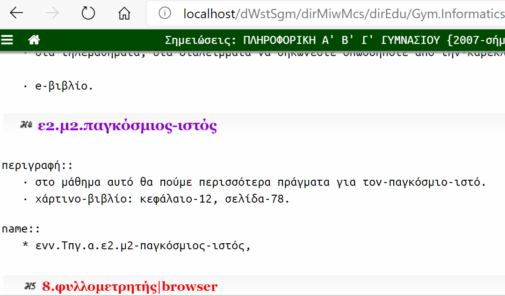

ε2.μ1.Διαδίκτυο--Παγκόσμιος-ιστός
περιγραφή::
· στο πρώτο μάθημα της-ενότητας θα-αναπτύξω τις πρώτες πιο βασικές έννοιες που πρέπει να ξέρετε για το-Διαδίκτυο.
· βιβλίο-παλιό: τάξη-Α: κεφάλαιο-11-12-13.
· βιβλίο-νέο: ενότητα-5.
name::
* ενν.μπγ.α.ε2.μ1-Διαδίκτυο--Παγκόσμιος-ιστός,
01) Internet|Διαδίκτυο
περιγραφή:
· ποιο είναι το πρώτο πράγμα που πρέπει να μάθετε για το-Internet;
· πως να μπαίνετε;
· που μας χρειάζεται;
· πως συνομιλούμε με άλλους;
· ΟΧΙ.
· η πρώτη έννοια που πρέπει να μάθετε είναι ΤΙ ΕΙΝΑΙ ΤΟ ΔΙΑΔΙΚΤΥΟ.
· βάζω στοίχημα ότι ΔΕΝ ξέρετε τι είναι ΑΝ ΚΑΙ όλοι δουλεύετε με το-Internet.
· το πιο συνηθισμένο λάθος είναι να νομίζετε ότι είναι πρόγραμμα|εφαρμογή.
· πρώτο, το-Internet είναι δίκτυο με κομπιούτερ, δηλαδή συνδεδεμένοι υπολογιστές.
· δίκτυα-υπολογιστών υπάρχουν πολλά.
· στο σπίτι σας μπορεί να έχετε ένα.
· στο εργαστήριο έχουμε ένα άλλο, αφού μπορώ να δείχνω την οθόνη του υπολογιστή μου σε όλους τους μαθητές και στον τοίχο βλέπετε τα-καλώδια με τα οποία συνδέονται.
· ποιο λοιπόν δίκτυο-υπολογιστών είναι το-Ίντερνετ;
· δεύτερο, είναι ένα παγκόσμιο δίκτυο-υπολογιστών, δηλαδή οι-υπολογιστές του βρίσκονται σε όλες τις-χώρες του-κόσμου.
· τρίτο, επειδή υπάρχουν πολλά παγκόσμια-δίκτυα-υπολογιστών, το-Ιντερνετ είναι το-μεγαλύτερο που υπάρχει.
· άρα, το-Διαδίκτυο είναι το μεγαλύτερο παγκόσμιο δίκτυο-υπολογιστών.
· επειδή το-Ιντερνετ είναι ένα, το-όνομά του είναι κύριο-όνομα όπως η-Αθήνα, τα-Γιάννενα και γιαυτό το-όνομά του κανονικά γράφετε με το πρώτο γράμμα κεφαλαίο.
· όμως πολλές φορές βλέπουμε να το γράφουν και με μικρό-γράμμα.
· τέλος επειδή έχουμε πολλά είδη δικτύων, ηλεκτρισμού, νερού, ανθρώπων, δεν πρέπει να λέτε ότι το-Ιντερνετ είναι σκέτα δίκτυο, αλλά να λέτε δίκτυο-υπολογιστών.
ορισμός::
· INTERNET-(Διαδίκτυο) είναι δίκτυο-υπολογιστών που α) είναι παγκόσμιο και β) είναι το μεγαλύτερο.
* ενν.μπγ/Διαδίκτυο,
* ενν.μπγ/Ιντερνετ,
* ενν.μπγ/Ίντερνετ,
* ενν.Διαδίκτυο@μπγ,
* ενν.Ιντερνετ@μπγ,
* McsEngl.cig/Internet,
* McsEngl.Internet@cig,
02) υπηρεσίες-Διαδικτύου
περιγραφή::
· ποιο είναι τώρα το δεύτερο σημαντικό πράγμα που πρέπει να μάθετε για το-Διαδίκτυο;
· μα φυσικά είναι να μάθουμε, πού μας χρειάζεται ή αλλιώς τι δουλειές κάνουμε με αυτό.
· λοιπόν, οι-δουλειές που κάνουμε με το-Διαδίκτυο, λέγονται ΥΠΗΡΕΣΙΕΣ.
· θυμηθείτε ότι οι-δουλειές που κάνουμε με έναν-υπολογιστή, λέγονται εφαρμογές.
· τι κάνουμε ποιο πολύ στο Διαδίκτυο;
· μη μου πείτε ΕΠΙΚΟΙΝΩΝΟΥΜΕ, γιατί αφού το-Διαδίκτυο είναι συνδεδεμένοι υπολογιστές και ένας υπολογιστής έχει μόνο πληροφορίες, αυτό που μπορούμε να κάνουμε στο-Διαδίκτυο είναι να επικοινωνήσουμε πληροφορία μεταξύ των-υπολογιστών του.
· όταν εδώ μιλάμε για δουλειές|υπηρεσίες του-Διαδικτύου, εννοούμε διαφορετικές ΠΕΡΙΠΤΩΣΕΙΣ επικοινωνίας πληροφορίας που κάνουμε στο Διαδίκτυο.
α) βλέπουμε πληροφορίες.
· προφανώς πηγαίνουμε στα εκατομμύρια κομπιούτερ του και βλέπουμε τις-πληροφορίες του.
β) ψυχαγωγούμαστε.
· παίζουμε παιγνίδια με άλλους ανθρώπους, βλέπουμε βίντεο, ακούμε τραγούδια κλπ από άλλα κομπιούτερ.
γ) κοινωνική-δικτύωση|social-network.
· με το-Facebook, Instagram, Twitter, ... κάνουμε "κοινωνική-δικτύωση" γιατί συνομιλούμε με δίκτυο από φίλους.
· θα ακούσετε αυτή την-υπηρεσία να τη λένε και κοινωνικά-μέσα|social-media.
· δεν είναι όμως σωστό γιατί κοινωνικό-μέσο είναι κάθε μέσο που χρησιμοποιούν οι-άνθρωποι να επικοινωνούν όπως το-ραδιόφωνο, την-τηλεόραση, τις-εφημερίδες, κλπ.
· στα κοινωνικά-δίκτυα όμως επικοινωνούν μόνο δίκτυα με ανθρώπους|φίλους.
δ) ανταλλαγή γραπτών μηνυμάτων.
· email: ανταλλαγή γραπτών μηνυμάτων offline, δηλαδή δεν απαιτείται ο-παραλήπτης να είναι την ίδια ώρα στο Ίντερνετ.
· chat: online.
· ομάδες συζητήσεων: ανταλλαγή γραπτών μηνυμάτων σε όλα τα μέλη μιας ομάδας ανθρώπων.
ε) βιντεοκλήση|τηλεδιάσκεψη.
· επικοινωνία ζωντανά με βίντεο με άλλους ανθρώπους.
στ) αγορές.
ζ) πληρωμή λογαριασμών και όχι μόνο με τις-τράπεζες.
η) επικοινωνία με το-κράτος.
· τώρα δε χρειάζεται να πάμε στην Εφορία, στο Ληξιαρχείο κλπ, μπορούμε να κάνουμε τις-συναλλαγές μας από το-σπίτι.
· στην εποχή δε του-κορονοϊού είναι απαραίτητο.
θ) τηλεμαθήματα.
ι) τηλεργασία.
ια) ανταλλαγή αρχείων με άλλα κομπιούτερ.
ιβ) παγκόσμιος-ιστός|www.
· άφησα τελευταία αυτή την-υπηρεσία γιατί πρέπει να πούμε πολλά πράγματα γι αυτή.
· το-βιβλίο λέει: ο-παγκόσμιος-ιστός είναι η πιο σημαντική υπηρεσία του-Διαδικτύου.
· αυτή η-πρόταση είναι σωστή μεν, αλλά έχει και ένα λάθος.
· ποιο είναι αυτό;
...
· είναι ασαφής, ΔΕΝ μας εξηγεί ποια υπηρεσία είναι όπως το-email, η-βιντεοκλήση κλπ (έτσι μιλάνε οι-πολιτικοί, 'θα κάνουμε τα-πάντα...' και δεν λένε τι).
· για να την-εξηγήσω θα χρειαστώ να εξηγήσω πρώτα την επόμενη έννοια.
ορισμός::
· ΥΠΗΡΕΣΙΕΣ-ΔΙΑΔΙΚΤΥΟΥ-(Internet-services) είναι οι-δουλειές επικοινωνίας που κάνουμε στο Internet.
* ενν.μπγ/υπηρεσίες-Διαδικτύου,
* ενν.υπηρεσίες-Διαδικτύου@μπγ,
* McsEngl.cig/Internet-services,
* McsEngl.Internet-services@cig,
03) πρωτόκολλο-επικοινωνίας
περιγραφή::
· όλοι έχετε δει ένα πρωτόκολλο-επικοινωνίας.
· είναι το-http|https.
· το βλέπετε στην αρχή της-διεύθυνσης κάθε ιστοσελίδας.

· τώρα, τι είναι ένα-πρωτόκολλο-επικοινωνίας;
· εμείς οι-άνθρωποι, πότε μπορούμε να επικοινωνήσουμε μεταξύ μας;
· αν μιλάμε ΚΟΙΝΗ ΓΛΩΣΣΑ.
· το-ίδιο και τα-κομπιούτερ, μόνο αν μιλούν κοινή γλώσσα μπορούν να επικοινωνήσουν.
· και αυτό είναι το-πρωτόκολλο-επικοινωνίας, η κοινή γλώσσα ή αλλιώς οι κοινοί κανόνες που χρησιμοποιούν οι-υπολογιστές για να επικοινωνήσουν.
· τώρα ποια η-διαφορά των-πρωτοκόλλων http και https.
· με το-πρώτο η-πληροφορία μεταδίδεται μεταξύ των-κομπιούτερ ΜΗ κωδικοποιημένη, ενώ με το-https κωδικοποιημένη.
· αυτό είναι πολύ σημαντικό γιατί κάποιος μπορεί με ένα-πρόγραμμα να μπει ανάμεσα στους υπολογιστές και να δει την-πληροφορία μας.
· όταν όμως έχουμε το-πρωτόκολλο-https (s=security) βλέπει μεν την-πληροφορία, αλλά δεν την-καταλαβαίνει.
· γιαυτό όταν γράφουμε ευαίσθητες πληροφορίες (κωδικούς εισόδου, αριθμούς καρτών όταν κάνουμε αγορές κλπ) ΠΑΝΤΑ ελέγχουμε αν δουλεύουμε με το-πρωτόκολλο-https.
ορισμός::
· ΠΡΩΤΟΚΟΛΛΟ-ΕΠΙΚΟΙΝΩΝΙΑΣ-(communication-protocol) είναι η-κοινή γλώσσα που χρησιμοποιούν οι-υπολογιστές για να επικοινωνούν, πχ http, ftp.
* ενν.μπγ/πρωτόκολλο-επικοινωνίας,
* ενν.πρωτόκολλο-επικοινωνίας@μπγ,
* McsEngl.cig/communication-protocol,
* McsEngl.communication-protocol@cig,
04) παγκόσμιος-ιστός
περιγραφή::
· τώρα μπορούμε να ορίσουμε τι είναι ο-παγκόσμιος-ιστός.
· ο-παγκόσμιος-ιστός είναι η πιο σημαντική υπηρεσία του-Διαδικτύου με κριτήριο όχι τι πληροφορία επικοινωνούμε (email, βιντεοκλήση κλπ) αλλά με κριτήριο τι πρωτόκολλο-επικοινωνίας χρησιμοποιούμε.
· ο-παγκόσμιος-ιστός χρησιμοποιεί το-πρωτόκολλο-επικοινωνίας-http|https.
· ξέρουμε εμείς το-πρωτόκολλο-http;
· όχι φυσικά, το ξέρουν ειδικά προγράμματα που χρησιμοποιούμε, οι-φυλλομετρητές|browsers και αν χρησιμοποιούμε browser καταλαβαίνουμε ότι είμαστε στον-παγκόσμιο-ιστό.
· ο-παγκόσμιος-ιστός δημιουργήθηκε περίπου 20 χρόνια μετά τη-δημιουργία του-Internet.
· το-Internet δημιουργήθηκε το-{1970} ({1969} για την ακρίβεια) και ο-παγκόσμιος-ιστός το-{1990}.
· στην αρχή για να επικοινωνήσουμε στο-Διαδίκτυο έπρεπε να γράφουμε εντολές (όπως τους κωδικούς εισόδου στο email) που αν κάνουμε ένα γράμμα λάθος δεν δουλεύει.
· φανταστείτε μια γιαγιά να γράφει εντολές, πόσο δύσκολο ήταν.
· με τον-παγκόσμιο-ιστό όμως είναι πανεύκολο να χρησιμοποιήσουμε το-Internet.
· γιαυτό όλοι σήμερα χρησιμοποιούν τον-παγκόσμιο-ιστό για να μπουν στο Διαδίκτυο και γιαυτό ο-παγκόσμιος-ιστός είναι η πιο σημαντική υπηρεσία του.
· πως καταλαβαίνουμε ότι είμαστε στο Διαδίκτυο και ΔΕΝ είμαστε στον παγκόσμιο-ιστό;
· όταν χρησιμοποιούμε πρόγραμμα διαφορετικό από τον-φυλλομετρητή που ξέρει άλλο πρωτόκολλο-επικοινωνίας διαφορετικό από το-http.
· εσείς πχ πάντα χρησιμοποιείτε φυλλομετρητή, ενώ εγώ όταν ανεβάζω ιστοσελίδες απο το-κομπιούτερ μου σε κομπιούτερ στο Διαδίκτυο χρησιμοποιώ άλλο πρόγραμμα με το-πρωτόκολλο-ftp.
· τέλος επειδή οι-άνθρωποι χρησιμοποιούν κατά 99% τον-παγκόσμιο-ιστό για να μπουν στο Διαδίκτυο, μπερδεύουν το-Διαδίκτυο (που είναι συνδεδεμένα κομπιούτερ) με τον-παγκόσμιο-ιστό (που είναι υπηρεσία του-Διαδικτύου).
ορισμός::
· ΠΑΓΚΟΣΜΙΟΣ-ΙΣΤΟΣ-(world-wide-web) είναι υπηρεσία-του-ίντερνετ, η πιο σημαντική, που χρησιμοποιεί το-πρωτόκολλο επικοινωνίας http, που γνωρίζουν οι browsers.
* ενν.μπγ7/παγκόσμιος-ιστός,
* ενν.παγκόσμιος-ιστός@μπγ7,
* McsEngl.cig7/world-wide-web,
* McsEngl.WWW!=world-wide-web@cig7,
* McsEngl.web@cig7,
* McsEngl.world-wide-web@cig7,
05) σύνδεση
περιγραφή::
· όλα τα-σπίτια έχουν σύνδεση στο-Ίντερνετ;
· όχι.
· τι πρέπει να κάνουμε για να αποκτήσουμε σύνδεση;
· να συνδέσουμε το-ρούτερ; όχι.
· να βάλουμε τον-κωδικό WiFi;
· όχι, με WiFi συνδεόμαστε όταν ήδη το-σπίτι μας έχει σύνδεση στο Διαδίκτυο.
· πρέπει να πάμε σε ειδικές εταιρείες που λέγονται 'πάροχοι υπηρεσιών Internet' (Cosmote, Vodafon, ...) και να πληρώσουμε!!!
· αγοράζουμε ένα πακέτο σύνδεσης που μπορεί να έχει και τηλεόραση, ομιλία σε κινητά κλπ και μας δίνουν για πρώτη φορά το-ρούτερ και κωδικούς.
· σήμερα οι-κωδικοί μπαίνουν αυτόματα στο-ρούτερ ενώ παλιότερα έπρεπε να τους γράψουμε εμείς και δεν ήταν εύκολο.
· τα παραπάνω, περιγράφουν τη-σύνδεση μέσω σταθερής-τηλεφωνικής-γραμμής.
· μπορούμε να συνδεθούμε όμως και με 2 άλλους τρόπους: μέσω του-δικτύου της-κινητής-τηλεφωνίας (με δεδομένα) και μέσω δορυφόρων.
ορισμός::
· ΣΥΝΔΕΣΗ-ΔΙΑΔΙΚΤΥΟΥ γίνεται μέσω των-εταιριών-παροχής-υπηρεσιών-ίντερνετ (ISP).
* ενν.μπγ7/σύνδεση-Διαδικτύου,
* ενν.σύνδεση-Διαδικτύου@μπγ7,
* McsEngl.cig7/internet-connection,
* McsEngl.ISP!=internet-service-provider@cig7,
* McsEngl.internet-connection@cig7,
06) bps=(bit-per-second)
περιγραφή::
· τι σημαίνει bit per second (bps);
· bit το δευτερόλεπτο.
· θυμάστε τι είναι τα-bit.
· μη μου πείτε 8 byte, το-αντίθετο ισχύει.
· είπαμε ότι την-πληροφορία ΔΕΝ μπορούμε να τη δούμε μέσα στον υπολογιστή γιατί είναι σε άλλη μορφή, και αυτά είναι τα-bit.
· στο Διαδίκτυο η-πληροφορία έρχεται στο σπίτι μας σε bit.
· αν περνάνε πολλά bit το-δευτερόλεπτο, έχουμε γρήγορο Internet, αλλιώς αργό.
· bps-(bit το-δευτερόλεπτο) επομένως είναι η-μονάδα μέτρησης της-ταχύτητας του-Ίντερνετ.
· τι ταχύτητες έχουμε σήμερα στα σπίτια μας;
· η-μικρότερη είναι 24-Mbps (Mega-bps), τι σημαίνει Mega (Kilo, Giga, Tera) είχαμε πει;
· 24 εκατομμύρια bit το-δευτερόλεπτο.
· αυτή είναι η-ονομαστική-ταχύτητα, στην πράξη είναι κάτω από 10-Mbps.
· στην περιοχή μας, καλύτερες ταχύτητες (και πιο ακριβές) είναι 50 και 100 Mbps.
ορισμός::
· BPS-(μπιτ-το-δευτερόλεπτο) είναι η-μονάδα μέτρησης της-ταχύτητας του-Ίντερνετ.
* ενν.μπιτ-το-δευτερόλεπτο@μπγ,
* McsEngl.cig7/BPS!=bit-per-second,
* McsEngl.BPS!=bit-per-second@cig,
* McsEngl.bit-per-second@cig,
07) φυλλομετρητής|browser
περιγραφή::
· πως μπαίνουμε στον παγκόσμιο-ιστό;
· χρησιμοποιούμε ειδικά προγράμματα|εφαρμογές όπως: Google-Chrome, Mozilla-Firefox, Brave, Microsoft-Edge, Safari, Opera, κλπ.
· αυτά τα-προγράμματα λέγονται φυλλομετρητές|browsers.
· οι-φυλλομετρητές γνωρίζουν το-πρωτόκολλο-επικοινωνίας http.
ορισμός::
· ΦΥΛΛΟΜΕΤΡΗΤΗΣ-(brower) είναι πρόγραμμα με το-οποίο μπαίνουμε στον παγκόσμιο-ιστό, πχ Google-Chrome, Mozilla-Firefox, Brave, Microsoft-Edge, Safari, Opera.
* ενν.μπγ/φυλλομετρητής|περιηγητής,
* ενν.περιηγητής@μπγ,
* ενν.φυλλομετρητής@μπγ,
* McsEngl.cig/web-browser,
* McsEngl.browser@cig,
* McsEngl.web-browser@cig,
08) ιστοσελίδα|webpage
περιγραφή::
· στον παγκόσμιο-ιστό πλοηγούμαστε από ιστοσελίδα σε ιστοσελίδα χρησιμοποιώντας τους-φυλλομετρητές.
· αυτή τη-στιγμή διαβάζεται μια ιστοσελίδα, το-e-βιβλίο του-μαθήματος.
· τι είναι οι-ιστοσελίδες;
· αν πατήσω Ctrl+U στην ιστοσελίδα του-μαθήματος βλέπω αυτό:

· τι είναι αυτό, κινέζικα;
· όχι, είναι απλά ΚΕΙΜΕΝΟ γραμμένο σε μια ειδική γλώσσα που καταλαβαίνουν οι-υπολογιστές και λέγεται Html.
· αυτό είναι οι-ιστοσελίδες.
· τώρα, κάποιες ιστοσελίδες είναι και αρχεία (πληροφορία με όνομα σε μια αποθήκη) και άλλες όχι, γιατί κάποια προγράμματα φτιάχνουν το-αντίστοιχο κείμενο και εμείς το-βλέπουμε στους φυλλομετρητές και όταν κλείσουμε το-φυλλομετρητή αυτό το-κείμενο χάνεται, δεν αποθηκεύεται πουθενά.
· κάτι άλλο, την-ιστοσελίδα του-μαθήματος εγώ την έφτιαξα στο δικό μου κομπιούτερ στο σπίτι μου, εσείς από πού τη βλέπετε;
· φυσικά τη βλέπετε στον υπολογιστή σας, αλλά από που ήρθε εκεί;
· από τον δικό μου υπολογιστή;
· ΟΧΙ.
· εγώ την έφτιαξα στον υπολογιστή μου, την αποθήκευσα και με ένα πρόγραμμα την ανέβασα σε έναν υπολογιστή του-Διαδικτύου (που είναι όλο το-24ωρο ανοιχτός) και από εκεί την βλέπει όποιος θέλει αν έχει πρόσβαση στον παγκόσμιο-ιστό (δηλαδή έχει πρόσβαση στο-Ίντερνετ και έχει και φυλλομετρητή).
· μπορεί ο-καθένας να ανεβάζει πληροφορίες στους υπολογιστές του-Διαδικτύου;
· όχι φυσικά, οι-υπολογιστές αυτοί έχουν κόστος αγοράς και συντήρησης.
· εγώ πχ πληρώνω 60€ περίπου το-χρόνο και έχω πρόσβαση σε έναν από αυτούς.
· υπάρχουν και άλλοι που δεν πληρώνεις αλλά συνήθως έχουν διαφημίσεις ή ανήκουν σε οργανισμούς που δουλεύουμε.
ορισμός::
· ΙΣΤΟΣΕΛΙΔΑ-(webpage) είναι ΕΓΓΡΑΦΟ γραμμένο στη γλώσσα-υπολογιστών HTML, που βλέπουμε στον παγκόσμιο-ιστό με τους-φυλλομετρητές.
* ενν.μπγ/ιστοσελίδα,
* ενν.ιστοσελίδα@μπγ,
* McsEngl.cig/webpage,
* McsEngl.webpage@cig,
09) διεύθυνση-ιστοσελίδας
περιγραφή::
· πόσες ιστοσελίδες υπάρχουν;
· πρακτικά ΑΠΕΙΡΕΣ!
· και πως τις βρίσκουμε;
· μα φυσικά με το-ΟΝΟΜΑ τους, που πρέπει να είναι μοναδικό γιατί αλλιώς θα υπήρχε μπέρδεμα.
· το-μοναδικό όνομα κάθε ιστοσελίδας λέγεται διεύθυνση και συνήθως βρίσκεται σε ένα κουτάκι στο πάνω μέρος της ιστοσελίδας.

· όπως βλέπετε η-διεύθυνση ΔΕΝ είναι και μικρή.
· το-πρώτο κομμάτι της μέχρι την πρώτη κάθετο (/) 'synagonism.net' είναι το-μοναδικό όνομα του κομπιούτερ στο Ίντερνετ που είναι αποθηκευμένη.
· αν τα-ονόματα των-υπολογιστών του-Διαδικτύου ΔΕΝ ήταν μοναδικά, πάλι θα είχαμε μπέρδεμα με ποιον υπολογιστή επικοινωνούμε.
· το-τελευταίο κομμάτι της διεύθυνσης 'Gym.Informatics.2007.Last.html' είναι το-όνομα του-αρχείου της-ιστοσελίδας και τελειώνει σε '.html' για να δείξει τι είδος αρχείο είναι (αν η-ιστοσελίδα είναι αρχείο όπως είπαμε στην παράδοση της προηγούμενης έννοιας, αλλιώς βλέπεται κάτι περίεργα σύμβολα που χρησιμοποιεί το-πρόγραμμα που την έφτιαξε)
· το-ενδιάμεσο τμήμα της διεύθυνσης '/dirMcsh/dirEdu/' τι είναι;
· έχουμε πει ότι τα-αρχεία στους υπολογιστές δεν είναι σκόρπια στις αποθήκες αλλά βρίσκονται σε κομμάτια|δωμάτια που τα λέμε φακέλους.
· οι-φάκελοι λοιπόν στην αποθήκη του-υπολογιστή του-Διαδικτύου που βρίσκεται η-ιστοσελίδα δηλώνονται σε αυτό το-κομμάτι της-διεύθυνσης.
· όπως βλέπετε εγώ επίτηδες έδωσα ονόματα που ξεκινούν απο 'dir' που σημαίνει φάκελος|directory.
· η-μοναδικότητα της-διεύθυνσης μια ιστοσελίδας πετυχαίνεται με το-μοναδικό όνομα του-υπολογιστή που βρίσκεται, τους φακέλους που υπάρχει και το-μοναδικό όνομα του-αρχείου στον τελευταίο φάκελο που είναι αποθηκευμένη.
· επίσης, αν δείτε η-διεύθυνση ΜΕΤΑ το '.html' να έχει δίεση κάτι σαν αυτό '#idCigTaE2_M3', αυτό δηλώνει ένα κομμάτι κειμένου ΜΕΣΑ στην ιστοσελίδα.
· είναι πολύ σημαντικό όταν γράφεται τη-διεύθυνση μιας ιστοσελίδας ΝΑ ΠΡΟΣΕΧΕΤΕ ΠΑΡΑ ΠΟΛΥ ΤΗΝ-ΟΡΘΟΓΡΑΦΙΑ ΤΗΣ γιατί έχουμε να κάνουμε με υπολογιστές, μηχανήματα που λειτουργούν με ρεύμα, και ένα γράμμα να κάνουμε λάθος, δεν θα βρούμε την-ιστοσελίδα που θέλουμε.
· τέλος, δεν πρέπει να μπερδεύεται μια-ιστοσελίδα με τη-διεύθυνσή της.
· γενικά δεν μπερδεύουμε ένα-πράγμα με το-όνομά του.
· πχ το-όνομά μας είναι συνήθως 2 λέξεις (μικρό-όνομα και επώνυμο) ενώ εμείς δεν είμαστε λέξεις, είμαστε σάρκα και οστά.
ορισμός::
· ΔΙΕΥΘΥΝΣΗ-ΙΣΤΟΣΕΛΙΔΑΣ-(webpage-address) είναι το μοναδικό όνομά της που αποτελείται
α) από το-όνομα του κομπιούτερ στο οποίο βρίσκεται,
β) των φακέλων και
γ) του αρχείου άν έχει,
πχ gym-eleous.ioa.sch.gr/2018/dirSwp/c3a03-zwodoxos.html.
* ενν.μπγ/διεύθυνση-ιστοσελίδας,
* ενν.διεύθυνση-ιστοσελίδας@μπγ,
* McsEngl.cig/webpage-address,
* McsEngl.webpage-address@cig,
10) ιστότοπος|website
περιγραφή::
· συχνά ακούτε στον παγκόσμιο-ιστό 'θα πάμε στο σάιτ τάδε'.
· τι είναι το σάιτ|site|website|ιστότοπος;
· είναι ΠΟΛΛΕΣ ιστοσελίδες που βρίσκονται στο ίδιο κομπιούτερ του-Διαδικτύου και άρα οι-διευθύνσεις όλων των-ιστοσελίδων ξεκινάνε με το ίδιο κείμενο που δηλώνει το-όνομα του-υπολογιστή που βρίσκονται, όπως είπαμε στην παράδοση της προηγούμενης έννοιας.
ορισμός::
· ΙΣΤΟΤΟΠΟΣ-(website) είναι ένα σύνολο ιστοσελίδων στο ίδιο κομπιούτερ (= με κοινό μέρος το ΠΡΩΤΟ κομμάτι της διεύθυνσής τους).
* ενν.μπγ/ιστότοπος,
* ενν.μπγ/σάιτ,
* ενν.ιστότοπος@μπγ,
* ενν.σάιτ@μπγ,
* McsEngl.cig/website,
* McsEngl.website@cig,
11) πλοήγηση
περιγραφή::
· τι είναι η-πλοήγηση ή αλλιώς το-σερφάρισμα;
· είναι η-ΔΙΑΔΙΚΑΣΙΑ μετάβασης από ιστοσελίδα σε ιστοσελίδα.
· όταν στο κείμενο μιας ιστοσελίδας βάλουμε το-ποντίκι και γίνει χεράκι

τότε στο κείμενο αυτό υπάρχει σύνδεσμος|link σε διεύθυνση άλλης ιστοσελίδας και όταν πατήσουμε πάνω του θα πάμε σ'αυτή την άλλη ιστοσελίδα.
· το-όνομα πλοήγηση είναι σύνθετο από το 'πλοίο' και 'οδήγηση'.
· φυσικά είναι παρομοίωση, όπως με ένα πλοίο πάμε από λιμάνι σε λιμάνι, έτσι και με το-σερφάρισμα πάμε από ιστοσελίδα σε ιστοσελίδα.
· η-πλοήγηση αν και μας φαίνεται κάτι απλό και φυσικό, δεν είναι καθόλου έτσι.
· έφερε ΕΠΑΝΑΣΤΑΣΗ στην επικοινωνία, γιατί ενώ είμαστε στο σπίτι μας και σερφάρουμε, οι-ιστοσελίδες που επισκεπτόμαστε βρίσκονται στην πραγματικότητα σε υπολογιστές που βρίσκονται σε ΟΛΟ τον-κόσμο και εμείς έχουμε την αίσθηση ότι είναι σπίτι μας.
· πέρασαν χιλιάδες χρόνια μέχρι να μπορέσει η-κοινωνία να εφεύρει αυτή την-τεχνολογία.
· Ctrl+click σε ένα-σύνδεσμο μας ανοίγει την-ιστοσελίδα σε άλλη ΚΑΡΤΕΛΑ.
· Shift+click σε ένα-σύνδεσμο μας ανοίγει την-ιστοσελίδα σε άλλο ΠΑΡΑΘΥΡΟ.
ορισμός:: 
· ΠΛΟΗΓΗΣΗ-ΔΙΑΔΙΚΤΥΟΥ-(web-navigation) λέμε την περιπλάνησή μας από ιστοσελίδα σε ιστοσελίδα.
* ενν.μπγ/πλοήγηση|σερφάρισμα|περιήγηση,
* ενν.περιήγηση-Διαδικτύου@μπγ,
* ενν.πλοήγηση-Διαδικτύου@μπγ,
* ενν.σερφάρισμα-Διαδικτύου@μπγ,
* McsEngl.cig/web-navigation,
* McsEngl.web-navigation@cig,
12) ιστοεφαρμογή|webapp
περιγραφή::
· οι-ιστοεφαρμογές είναι ιστοσελίδες ή ιστότοποι που συγχρόνως είναι και προγράμματα-εφαρμογών.
· έχουν ένα τεράστιο ΠΛΕΟΝΕΚΤΗΜΑ σε σχέση με τις-εφαρμογές.
· δεν χρειάζεται να κατεβάσουμε τίποτα στον υπολογιστή μας για να τις τρέξουμε.
· αυτό που χρειάζεται είναι ένας-φυλλομετρητής, τον-οποίο όλα τα-κομπιούτερ έχουν, και να ξέρουμε απλώς μια διεύθυνση ιστοσελίδας.
· επίσης δεν χρειάζεται να αναβαθμίσουμε εμείς την-εφαρμογή, αυτό γίνεται από τον-κατασκευαστή της-ιστοεφαρμογής.
· κάτι άλλο πολύ σημαντικό είναι ότι μπορούμε από απλούς υπολογιστές να κάνουμε επεξεργασία πληροφορίας σε μεγάλα υπολογιστικά-συστήματα.
· τέλος οι-ιστοεφαρμογές καταναλώνουν ελάχιστο αποθηκευτικό-χώρο.
· το-eclass, webex, webmail, η-παρούσα-ιστοσελίδα είναι ιστοεφαρμογές.
· όταν μια-ιστοεφαρμογή είναι ιστότοπος μπορεί να ακούσετε να τη λένε 'πύλη', 'πλατφόρμα' ...
· φυσικά έχουν και ΜΕΙΟΝΕΚΤΗΜΑΤΑ σε σχέση με τις-εφαρμογές όπως πρέπει να έχεις σύνδεση στο ίντερνετ για να δουλέψουν και δεν επιτρέπεται να γράψουν στην τοπική-αποθήκη για λόγους ασφάλειας.
ορισμός::
· ΙΣΤΟΕΦΑΡΜΟΓΗ-(webapp) είναι μια-ιστοσελίδα ή ένας-ιστότοπος που συγχρόνως είναι και πρόγραμμα-εφαρμογών.
* ενν.μπγ/ιστοεφαρμογή,
* ενν.ιστοεφαρμογή@μπγ,
* McsEngl.cig/webapp,
* McsEngl.webapp@cig,
13) μηχανή-αναζήτησης
περιγραφή::
· οι-ιστοσελίδες είναι πρακτικά άπειρες και οι-διευθύνσεις τους είναι σχετικά μεγάλες και δεν είναι εύκολο να τις θυμόμαστε.
· συνεπώς έχουμε πρόβλημα να βρούμε την ιστοσελίδα που χρειαζόμαστε.
· σ'αυτό το-πρόβλημα μας δίνουν λύση, μερικές φορές, οι-μηχανές-αναζήτησης.
· αυτές είναι ιστοσελίδες-ιστοεφαρμογές (άρα έχουν διεύθυνση) και ένα κουτάκι-αναζήτησης στο οποίο γράφουμε σημαντικές λέξεις σχετικές με το-περιεχόμενο του-κειμένου μιας-ιστοσελίδας που μας ενδιαφέρει, και μας βρίσκουν ΔΙΕΥΘΥΝΣΕΙΣ ιστοσελίδων.
· οι-λέξεις που γράφουμε ονομάζονται λέξεις-κλειδιά.
· σήμερα η-πιο γνωστή μηχανή-αναζήτησης είναι της-Google και έχει διεύθυνση: google.com ή google.gr (για αναζήτηση Ελληνικών ιστοσελίδων).
· επίσης και η-Microsoft (που φτιάχνει τα-Windows) έχει μηχανή-αναζήτησης με διεύθυνση: bing.com.
· είναι σημαντικό να καταλάβουμε ότι οι-μηχανές-αναζήτησης μας βρίσκουν διευθύνσεις-ιστοσελίδων (ονόματα-ιστοσελίδων) και όχι ιστοσελίδες.
· εμείς πάμε σε αυτές τις-ιστοσελίδες και αν περιέχουν την-πληροφορία που θέλουμε είμαστε τυχεροί.
· τα-μειονεκτήματα των-μηχανών-αναζήτησης είναι ότι μπορεί να μας βρουν χιλιάδες ή εκατομμύρια διευθύνσεις με τις-λέξεις-κλειδιά και φυσικά δεν μπορούμε τα τις ελέγξουμε όλες αν περιέχουν την-πληροφορία που ζητάμε.
· επίσης, επειδή οι-υπολογιστές σήμερα ΔΕΝ καταλαβαίνουν το-νόημα των-κειμένων, απλώς βρίσκουν ιστοσελίδες που περιέχουν τις-λέξεις-κλειδιά αλλά το-θέμα τους μπορεί να είναι άσχετο με αυτές.
· πχ θέλω να μάθω τι είναι σεισμοί και τα-χαρακτηριστικά τους και οι-μηχανές-αναζήτησης μας βρίσκουν ιστοσελίδες με θέμα συνέδρια για σεισμούς επειδή έχουν μέσα το-όνομα 'σεισμοί'.
· τα-κριτήρια που χρησιμοποιούν για να εμφανίσουν τη-σειρά των-διευθύνσεων είναι:
* η-επισκεψιμότητα μιας ιστοσελίδας,
* αν υπάρχουν σύνδεσμοι σε άλλες ιστοσελίδες προς αυτή,
* που βρίσκονται οι-λέξεις-κλειδιά, σε τίτλους ή παραγράφους,
* και φυσικά αν από τις-διαφημίσεις οι-εταιρίες που έχουν τις-μηχανές-αναζήτησης κερδίζουν χρήματα!
· ΠΡΟΣΟΧΗ: ΔΕΝ πρέπει να μπερδεύετε το-κουτί-αναζήτησης με το-κουτί-διεύθυνσης-ιστοσελίδας.
· όταν ξέρουμε μια-διεύθυνση, ΔΕΝ πάμε στο κουτί-αναζήτησης να τη γράψουμε, εκεί πάμε αν δεν ξέρουμε μια-διεύθυνση-ιστοσελίδας.
ορισμός:: 
· ΜΗΧΑΝΗ-ΑΝΑΖΗΤΗΣΗΣ-(search-engine) είναι ιστοεφαρμογή με ένα κουτάκι στο οποίο γράφουμε λέξεις-κλειδιά και μας βρίσκει ΔΙΕΥΘΥΝΣΕΙΣ ιστοσελίδων που τις περιέχουν πχ google.com, bing.com.
* ενν.μπγ/μηχανή-αναζήτησης,
* ενν.μηχανή-αναζήτησης@μπγ,
* McsEngl.cig/search-engine,
* McsEngl.search-engine@cig,
14) chatbot-τεχνητής-νοημοσύνης
περιγραφή::
· τα chatbot-τεχνητής-νοημοσύνης είναι ιστοεφαρμογές που απαντούν στις ερωτήσεις μας.
· από το {Νοέμβριο του 2022} μπήκαν στη ζωή μας.
· Τα chatbot μεγάλων γλωσσικών μοντέλων (LLM), όπως πιο σωστά λέγονται, είναι συστήματα τεχνητής νοημοσύνης (τεχνητά-νευρωνικά-δίκτυα) που εκπαιδεύονται σε τεράστια ποσότητα δεδομένων κειμένου. Μπορούν να παράγουν κείμενο, να μεταφράζουν γλώσσες, να γράφουν διαφορετικούς τύπους δημιουργικού περιεχομένου και να απαντούν στις ερωτήσεις σας με ενημερωτικό τρόπο. Τα chatbot LLM γίνονται όλο και πιο δημοφιλή σε μια ποικιλία εφαρμογών, συμπεριλαμβανομένης της εξυπηρέτησης πελατών, της εκπαίδευσης και της ψυχαγωγίας.
* https://chatgpt.com/
* https://copilot.microsoft.com/
* https://gemini.google.com/
· ΠΛΕΟΝΕΚΤΗΜΑΤΑ:
"* **Διαθεσιμότητα 24/7:** Τα chatbot LLM μπορούν να χρησιμοποιηθούν 24/7, πράγμα που σημαίνει ότι μπορούν να παρέχουν υποστήριξη πελατών ή να απαντούν σε ερωτήσεις ακόμη και όταν οι ανθρώπινοι πράκτορες δεν είναι διαθέσιμοι.
* **Πολυγλωσσικές δυνατότητες:** Τα chatbot LLM μπορούν να εκπαιδευτούν σε πολλές γλώσσες, κάτι που τα καθιστά ιδανικά για επιχειρήσεις με παγκόσμιο πελατολόγιο.
* **Δυνατότητα εξατομίκευσης αλληλεπιδράσεων:** Τα chatbot LLM μπορούν να χρησιμοποιηθούν για την εξατομίκευση των αλληλεπιδράσεων με τους πελάτες, κάτι που μπορεί να οδηγήσει σε πιο θετική εμπειρία πελάτη.
* **Δυνατότητα χειρισμού πολλών εργασιών ταυτόχρονα:** Τα chatbot LLM μπορούν να χειριστούν πολλές εργασίες ταυτόχρονα, κάτι που τα καθιστά ιδανικά για πολυάσχολα περιβάλλοντα.
* **Δυνατότητα να μαθαίνουν και να βελτιώνονται με την πάροδο του χρόνου:** Τα chatbot LLM μπορούν να μαθαίνουν και να βελτιώνονται με την πάροδο του χρόνου, πράγμα που σημαίνει ότι μπορούν να γίνουν πιο ακριβή και χρήσιμα καθώς χρησιμοποιούνται περισσότερο."
· MEIONEKTHMATA:
"* **Περιορισμένη κατανόηση του πλαισίου:** Τα chatbot LLM μπορεί μερικές φορές να δυσκολεύονται να κατανοήσουν το πλαίσιο μιας συνομιλίας, κάτι που μπορεί να οδηγήσει σε παρεξηγήσεις.
* **Δυνατότητα προκατάλησης:** Τα chatbot LLM μπορεί να είναι προκατειλημμένα, κάτι που μπορεί να οδηγήσει σε άδικες ή διακριτικές αλληλεπιδράσεις.
* **Έλλειψη ενσυναίσθησης:** Τα chatbot LLM μπορεί μερικές φορές να μην έχουν ενσυναίσθηση, κάτι που μπορεί να τους δυσκολέψει να χτίσουν σχέσεις με τους πελάτες.
* **Κόστος:** Τα chatbot LLM μπορεί να είναι δαπανηρά στην ανάπτυξη και τη-συντήρησή τους.
Παρά τις προκλήσεις αυτές, τα chatbot LLM έχουν τη-δυνατότητα να αλλάξουν ριζικά τον τρόπο με τον οποίο αλληλεπιδρούμε με τους υπολογιστές. Καθώς τα chatbot LLM συνεχίζουν να αναπτύσσονται, μπορούμε να αναμένουμε να γίνουν ακόμη πιο εξελιγμένα και ικανά, και πιθανόν να παίξουν όλο και πιο σημαντικό ρόλο στη ζωή μας."
[{2023-11-29 retrieved} https://bard.google.com/chat/e63fd18ee0294fdb?hl=en&pli=1]
ορισμός::
· CHATBOT-ΤΕΧΝΗΤΗΣ-ΝΟΗΜΟΣΥΝΗΣ είναι ιστοεφαρμογές που απαντούν στις ερωτήσεις μας.
* ενν.μπγ/τσάτμποτ-τεχνητής-νοημοσύνης,
* ενν.τσάτμποτ-τεχνητής-νοημοσύνης@μπγ,
* McsEngl.cig/AI-chatbot,
* McsEngl.cig/chatbot-AI,
* McsEngl.chatbot-AI@cig,
ε2.μ2.ηλεκτρονικό-ταχυδρομείο--Πσδ
περιγραφή::
· εδώ θα αναπτύξουμε τη-βασική υπηρεσία ανταλλαγής γραπτών μηνυμάνων offline.
· βιβλίο-παλιό: κεφάλαιο-14, σελίδα-86.
· βιβλίο-νέο: ενότητα-5.
* ενν.μπγ.α.ε2.μ4-ηλεκτρονικό-ταχυδρομείο--Πσδ,
15) ηλεκτρονικό-ταχυδρομείο-(ΗΤ)
περιγραφή::
· ηλεκτρονικό-ταχυδρομείο είναι η-ΥΠΗΡΕΣΙΑ ανταλλαγής γραπτών-μηνυμάτων OFFLINE.
· η-υπηρεσία ανταλλαγής γραπτών-μηνυμάτων online, λέγεται CHAT.
ορισμός:: 
· ΗΛΕΚΤΡΟΝΙΚΟ-ΤΑΧΥΔΡΟΜΕΙΟ-(email) είναι η-υπηρεσία ανταλλαγής γραπτών μηνυμάτων offline.
* ενν.μπγ/ηλεκτρονικό-ταχυδρομείο,
* ενν.ΗΤ!=ηλεκτρονικό-ταχυδρομείο@μπγ,
* ενν.ηλεκτρονικό-ταχυδρομείο@μπγ,
* McsEngl.cig/Email,
* McsEngl.email@cig,
16) διεύθυνση-ΗΤ
περιγραφή::
· για να στείλετε μήνυμα, πρέπει να ξέρετε τη-ΔΙΕΥΘΥΝΣΗ του-παραλήπτη.
· αυτή είναι της-μορφής: 'όνομα-χρήστη@εταιρεία-υπηρεσίας'
· ΔΕΝ πρέπει να μπερδεύετε τη-διεύθυνση-email με τη-διεύθυνση-ιστοσελίδας.
· η-διεύθυνση-ιστοσελίδας ΔΕΝ ΕΧΕΙ @.
ορισμός::
· ΔΙΕΥΘΥΝΣΗ-ΗΛ-ΤΑΧ-(email-address) είναι κείμενο που δηλώνει μοναδικά τον-παραλήπτη μηνύματος, πχ mail@gym-eleous.ioa.sch.gr.
* ενν.μπγ/διεύθυνση-ΗΤ,
* ενν.διεύθυνση-ΗΤ@μπγ,
* McsEngl.cig/email-address,
* McsEngl.email-address@cig,
17) λογαριασμός-ΗΤ
περιγραφή::
· για να στείλουμε ένα-μήνυμα-ΗΤ εκτός από τη-διεύθυνση του-παραλήπτη πρέπει να έχουμε και λογαριασμό-ΗΤ.
· ο-λογαριασμός είναι 2 πράγματα:
· α) το-όνομα-του-χρήστη, που το ξέρουν όλοι, και
· β) και ένας κρυφός κωδικός.
· όλοι οι-μαθητές έχουν λογαριασμό-email στο πανελλήνιο-σχολικό-δίκτυο (sch.gr).
ορισμός::
· ΛΟΓΑΡΙΑΜΟΣ-ΗΛ-ΤΑΧ-(email-account) λέμε 2 πράγματα α) το-όνομα-του-χρήστη (username) και β) ένας-κρυφός-κωδικός (password) που μας χρειάζονται για να στείλουμε και να πάρουμε email.
* ενν.μπγ/λογαριασμός-ΗΤ,
* ενν.λογαριασμός-ΗΤ@μπγ,
* McsEngl.cig/email-account,
* McsEngl.email-account@cig,
18) είδη-ΗΤ
περιγραφή::
· η-υπηρεσία του-ΗΤ δημιουργήθηκε πριν από τον-παγκόσμιο-ιστό και άρα χρησιμοποιεί διαφορετικό πρωτόκολλο-επικοινωνίας, το-SMTP.
· όμως μπορούμε να στείλουμε email και με το-πρωτόκολλο-Http του-παγκόσμιου-ιστού.
· άρα ανάλογα με το-πρωτόκολλο έχουμε 2 είδη ΗΤ:
α) το-Smtp email και
β) το-Http email (webmail).
· πως καταλαβαίνουμε ποιο χρησιμοποιούμε;
· από το-πρόγραμμα που δουλεύουμε.
· αν έχουμε φυλλομετρητή, τότε χρησιμοποιούμε το-Http-email, πάμε σε μια διεύθυνση πχ webmail.sch.gr ή mail.google.com δίνουμε τα-στοιχεία του-λογαριασμού μας και στέλνουμε ή παίρνουμε μηνύματα.
· για το-Smtp-email, έχουμε άλλο πρόγραμμα πχ το-Mozilla-thunderbird.
ορισμός::
· ΕΙΔΗ-ΗΤ-(email-specific):
* Smtp email,
* Http email (webmail),
* ενν.μπγ/είδη-ΗΤ,
* ενν.είδη-ΗΤ@μπγ,
* McsEngl.cig/email-specific,
* McsEngl.email-specific@cig,
19) Πανελλήνιο-σχολικό-δίκτυο
περιγραφή::
· το-Πανελλήνιο-σχολικό-δίκτυο είναι το-website του-Υπουργείου-Παιδείας που παρέχει ΥΠΗΡΕΣΙΕΣ στην εκπαιδευτική-κοινότητα (Σχολεία, εκπαιδευτικούς, μαθητές).
· το webmail.sch.gr και το eclass.sch.gr είναι ήδη δυο υπηρεσίες του που ήδη έχουμε χρησιμοποιήσει.
· όμως έχει και πολλές άλλες και καλό είναι να επισκέπτεστε συχνά το-σάιτ του (θα το ακούσετε και 'πύλη') γιατί θα βρίσκετε πράγματα που σας ενδιαφέρουν.
· η-διεύθυνσή του είναι: sch.gr
* ενν.μπγ/Πανελλήνιο-σχολικό-δίκτυο,
* ενν.μπγ/Πσδ,
* ενν.Πανελλήνιο-σχολικό-δίκτυο@μπγ,


 -
-